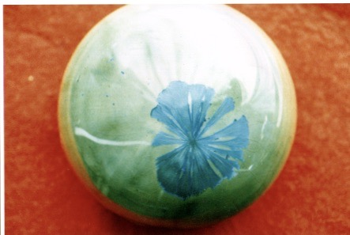

Hi, welcome to my website!
I work with crystals and have been fascinated with them since 1975 when one day I looked at the glaze of a fired pot under a microscope lens. My eyes were instantly transported into a three dimensional world of crystals that you could not see without the microscope. I was transfixed and felt an immediate energy shift and a profound sense of peace and harmony. We are wondrous beings. I knew that the structure of my body was crystalline.
The energy in the crystal formations held in place as the substance of vibration resonated with me, although at the time I did not understand how this happened or why. What a beautiful unseen world. As a professional potter then, I knew that I had to create these crystals big enough for others to see with the naked eye. I succeeded, successfully exhibiting overseas and in New Zealand. The image above (in the header) is from a plate and the image below from a paper weight without the need to look through a microscope.
At that time I did not know anything about the crystals in our body.
On a molecular level our cells contain silica, the stuff of quartz crystals. Our body also contains crystalline structures that are fundamental to its structure. We stand up straight because our body has a skeleton made up of calcium phosphate crystals.
There are tiny crystals in our inner ear that enable us to be sensitive to gravity and help us keep our balance.
Our crystalline bone structure, in general, acts as an antenna for all incoming and internal body vibratory energy and information, including direct thought form energy. The brain, nervous system, and heart also give off fields that resonate with our bone and other crystal-like structures. The crystalline bone structure then amplifies and radiates this energy and information to the rest of the system down to the cellular and subcellular crystalline structures.